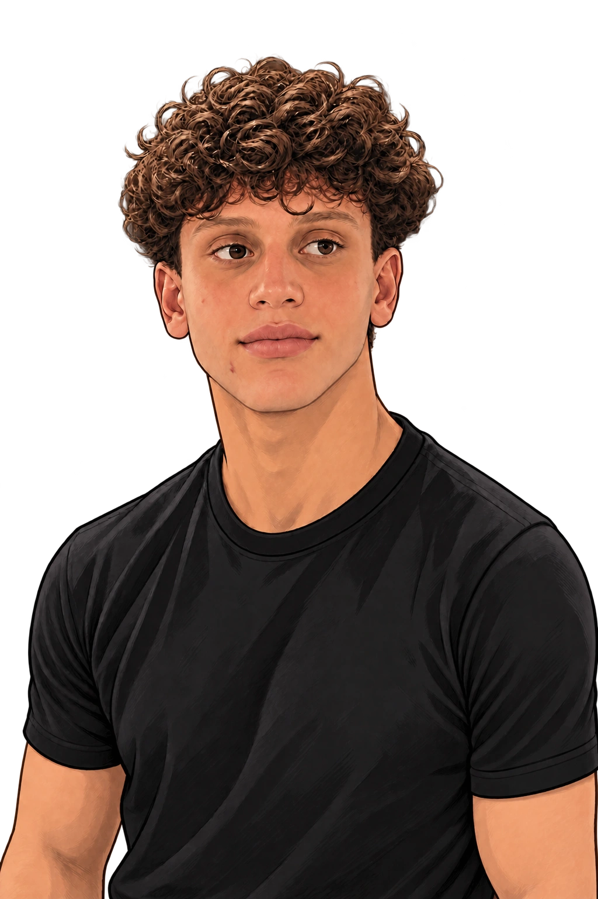
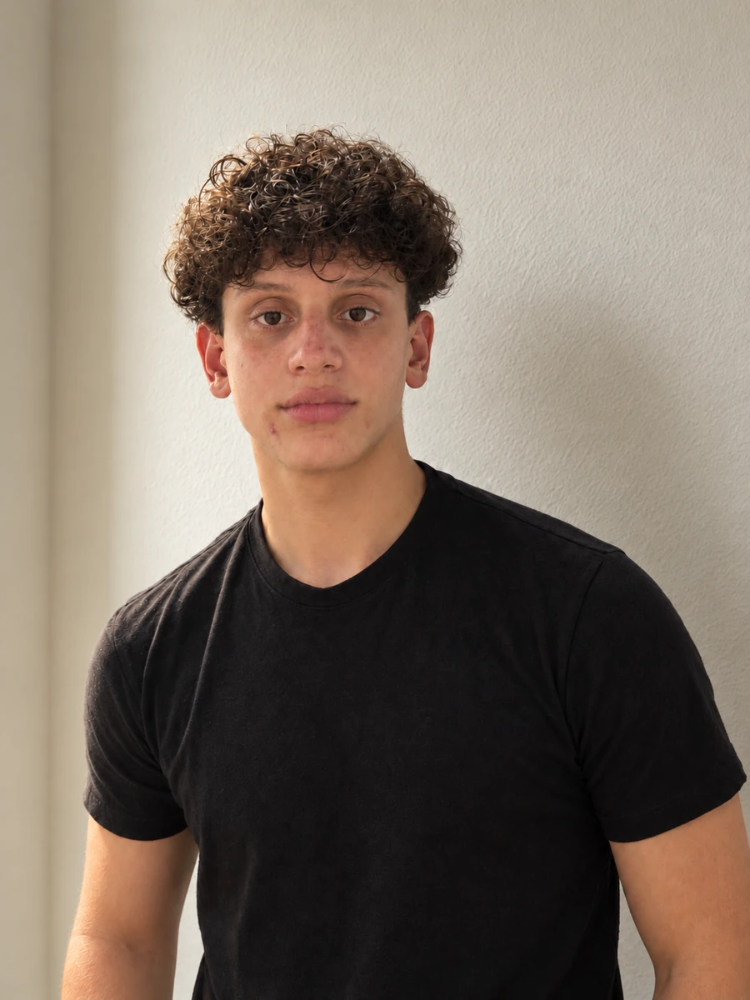

DISPONÍVEL PARA NOVAS IDEIASINDEPENDENTE & CURIOSO POR NATUREZA

DESENVOLVIMENTO COM PERSONALIDADE
01 / POR TRÁS DA TELANUNCA É SÓ SOBRE CÓDIGO.

Curiosidade para imaginar.
Coragem para começar.
Cuidado para construir.
Sou Guilherme, desenvolvedor de Londrina. Gosto de entender como as coisas funcionam — e descobrir como elas podem funcionar melhor.
Crio experiências digitais que conectam forma e função. Da primeira ideia ao detalhe que você quase não percebe, mas sente.
Meus projetos no GitHub02 / PEQUENOS EXPERIMENTOSFEITO PARA INTERAGIR.
A web pode
ser mais viva.
Uma ideia reage.
Um detalhe surpreende.
Você faz parte da experiência.
MOVA O MOUSE. MUDE O RITMO.ARRASTE PARA OS LADOS. SIGA O FLUXO.
sinta o fluxo.INTERAÇÃO. MOVIMENTO. INTENÇÃO.
É nos detalhes que uma interface ganha personalidade.
03 / UMA CONVERSA MUDA TUDO ABERTO A POSSIBILIDADES
Tem algo em mente?
Vamos criaralgo bom.
Um projeto, uma oportunidade
ou uma ideia que ainda está começando.Escrever um e-mail
ou uma ideia que ainda está começando.Escrever um e-mail